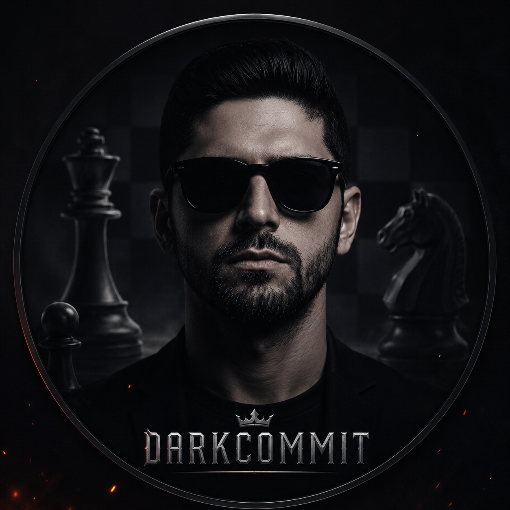

Hakkımda

Merhaba! Ben Mert Can Yiğit. Full Stack Developer kursunda web teknolojilerini öğreniyor ve öğrendiklerimi küçük projelerle pekiştiriyorum.
Amacım; kullanıcıya net görünen, düzenli kodlanmış ve bakımı kolay arayüzler üretmek. Bu portföy sitesi de HTML, CSS ve Bootstrap bilgileriyle hazırlandı.
Öğrendiğim teknolojiler:
- HTML
- CSS
- Bootstrap 5
- JavaScript (temel)